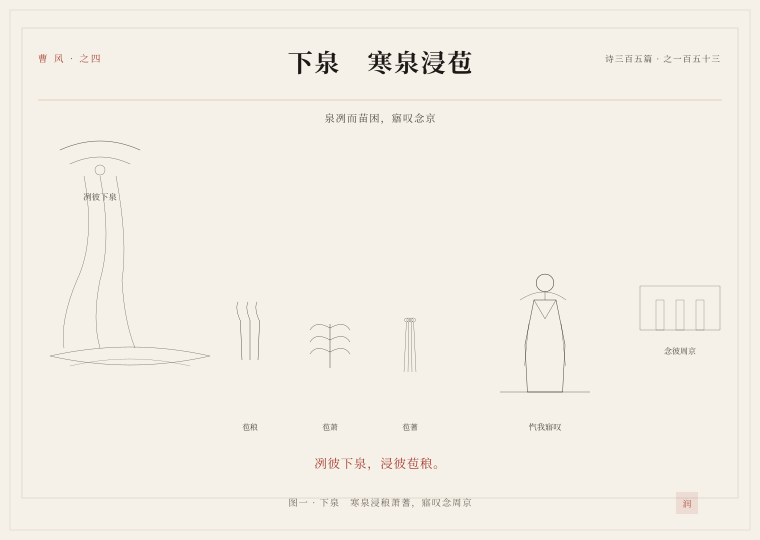
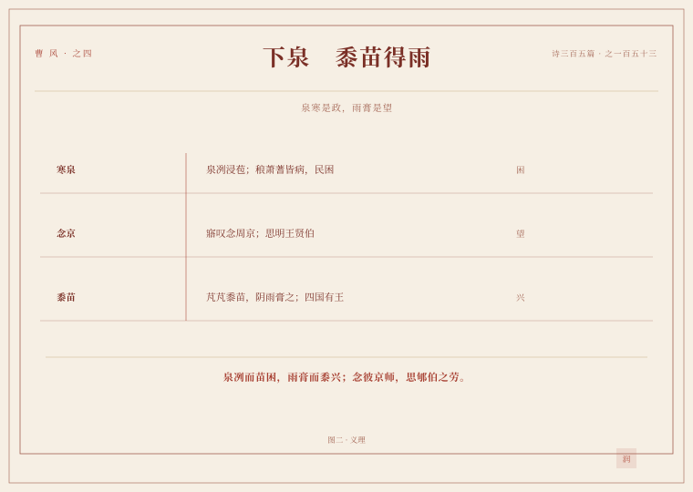

第一百五十三篇 下泉
曹风 · 之四 SJ153
朗读 · 普通话
依经文原文朗读，章次不读出；配古琴底乐，不改速、不加拖腔。全库同一音色（豆包 TTS），非播音员录制。
一 解题
诗三判：
- 谁在说：曹国之人。见寒泉下流，浸彼苞稂、苞萧、苞蓍，草木不得生；寤而叹息，念周京、京周、京师。
- 说什么事：前三章皆以「冽彼下泉，浸彼苞某」起，末章忽转「芃芃黍苗，阴雨膏之」；一寒一雨，一浸一膏，一困一兴。
- 为何编在此：曹风末篇。前有蜉蝣之奢、候人之失、鸤鸠之仪，此篇收以「思治」；一国将亡，最后所念，是明王贤伯。
《毛序》：「《下泉》，思治也。曹共公侵刻下民，不得其所，忧而思明王贤伯也。」
朱子《诗集传》：「比而兴也。冽，寒也。下泉，泉之下流者。苞，丛生也。稂，童梁，莠属也。忾，叹息也。周京，天子所都也。」二章：「萧，蒿也。」三章：「蓍，筮草也。」四章：「芃芃，盛貌。膏，润也。郇伯，郇国伯爵，文王之后，为州伯，有功于民者。」
本库的看法：《下泉》是一首把「思治」写成寒泉与好雨对照的诗。
毛序说「思明王贤伯」，朱子说「比而兴」，二说一政一象，其实同指：泉愈寒，苗愈困；雨愈膏，望愈切。
须辨：下泉是泉之下流，不是下水；苞是丛生，不是苞裹；稂是童梁、莠类，不是稂莠不分；忾是叹息，不是愤忾；郇伯是郇国伯爵、为州伯有功于民者，不是荀伯、郇侯泛称。末章「四国有王」，是望，不是已治。
断语：泉冽而苗困，雨膏而黍兴；念彼京师，思郇伯之劳。
先辨五事：「下泉」是泉之下流，不是下水；「苞」是丛生，不是苞裹；「稂」是童梁、莠类，不是狼尾草；「忾」是叹息，不是愤忾；「郇伯」是郇国伯爵，不是荀伯。
二 经文
第一章
冽彼下泉，浸彼苞稂。
忾我寤叹，念彼周京。
第二章
冽彼下泉，浸彼苞萧。
忾我寤叹，念彼京周。
第三章
冽彼下泉，浸彼苞蓍。
忾我寤叹，念彼京师。
第四章
芃芃黍苗，阴雨膏之。
四国有王，郇伯劳之。
三 韵读
- 一章：泉、叹、京，元、文、阳旁转。声寒而长。
- 二章：萧、叹、周，幽、元、幽交错。声咽。
- 三章：蓍、叹、师，脂、元、脂交错。声细而远。
- 四章：苗、膏、劳，宵、豪相叶。声开而润，收于劳。
读法：前三章「泉—叹—京」三顿，声寒而咽；末章转宵，声开而润；一寒一暖，正是诗之转关。
四 字义与名物
- 冽：寒。下泉：泉之下流。浸：泡渍。苞：丛生。稂：童梁，莠类。忾：叹息。寤：醒。周京：周天子之都。
- 萧：蒿。京周：即周京，倒文协韵。蓍：筮草。京师：天子之都。
- 芃芃：盛貌。黍苗：黍之苗。膏：润。四国：四方之国。王：天子。郇伯：郇国伯爵，朱子谓文王之后、为州伯、有功于民者。劳：慰劳、有功于民。
五 今译
一章：寒冽的下泉，浸泡丛生的稂草。我醒而叹息，思念那周京。
二章：寒冽的下泉，浸泡丛生的萧蒿。我醒而叹息，思念那京周。
三章：寒冽的下泉，浸泡丛生的蓍草。我醒而叹息，思念那京师。
四章：芃芃的黍苗，阴雨滋润它。四方之国有了天子，郇伯慰劳有功于民。
六 章旨
- 一章：寒泉浸稂，是「苗不得生」；念周京，是望天子之都。
- 二章：寒泉浸萧，是「草不得茂」；念京周，是望王政之归。
- 三章：寒泉浸蓍，是「筮草亦病」；念京师，是望贤伯之出。
- 四章：黍苗得雨，是「转困为兴」；四国有王、郇伯劳之，是望治之至。
七 诗教
- 寒泉是政：泉寒而苗困，政刻而民病；诗不斥共公，只写一泉之寒。
- 好雨是望：黍苗得膏，不是已得，是望得；末章一「望」字，收尽三章之叹。
- 思治不是空想：所念者周京、京师，所望者四国有王、郇伯劳之；望有实指，故不流于怨。
八 分寸与边界
- 不把「下泉」读成下水：下泉是泉之下流；读成下水，则「浸」无根。
- 不把「稂」读成狼尾草：稂是童梁、莠类；认错草，则「苞稂」之义失。
- 不把「忾」读成愤忾：忾是叹息；读成愤，则诗之忧失其柔。
- 不把末章读成已治：四国有王是望，不是当时已治；读成已治，则「思治」之旨尽失。
九 存疑
- 诗旨：毛序「思治」，朱子「比而兴」。本库从毛朱，以寒泉好雨对照为骨。
- 「稂」：毛传「童梁」，朱子「莠属」。从童梁、莠类。
- 「郇伯」：朱子谓郇国伯爵、文王之后、为州伯有功于民。从朱子，不指实名。
- 「四国有王」：一说当时已有王，一说望有王。从望有王。
十 跨典
- 《诗经·曹风》四篇，以蜉蝣起、下泉收；一起于虫之短，一收于泉之寒，中间一「仪」为一线。
- 《孟子》「民为贵」；此篇寒泉浸苗，正是民不得其所。
- 《尚书》「若大旱之望云霓」；此篇「阴雨膏之」，正是望雨之切。
十一 双卡与图
六对：
| 下泉（泉之下流） |
下泉（下水） |
| 苞（丛生） |
苞（苞裹） |
| 稂（童梁、莠类） |
稂（狼尾草） |
| 忾（叹息） |
忾（愤忾） |
| 郇伯（郇国伯爵） |
郇伯（荀伯） |
| 四国有王（望治） |
四国有王（已治） |

图一 · 下泉 寒泉浸苞，寤叹念京

图二 · 下泉 黍苗得雨，四国有王